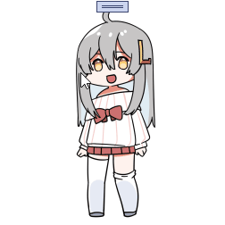

虚拟桌宠模拟器 使用教程
本教程仅会在第一次启动/操作更新时自动打开 如果你每次启动桌宠都能看到这个文件自动打开,那就是bug,请反馈给我
桌宠默认会打开数据计算, 打开数据计算后会计算桌宠心情/食物等消耗,需要玩家进行互动.可在设置中进行设置开关和设置游玩节奏
本游戏是核心是桌面宠物, 更多自动操作例如乱走乱动,发呆,蹲下等需要挂机才能看到.
11/24 更新 捏脸
捏脸动画为2023年的steam大奖提名活动奖励
长按脸部捏脸

基本操作
鼠标右键打开菜单栏
再次右键关闭

长按头/身子 提起进行移动
可在设置中设置长按时间

点击头部摸头

点击身体说话

摸头

摸身子

互动
投喂
点击投喂进行吃饭喝水, 吃/喝完后会立即补充一半的饱腹和口渴, 剩下一半将会缓慢增加

打工
通过互动 文案或直播 进行赚钱, 赚了钱后就可以给桌宠买食物饮料或者家具等(若有社区系统)

学习
学习以更快的获得经验值
睡觉
更少的体力消耗和加快回复体力, 适合挂机
数据计算
设置-互动中可以开关数据计算等相关操作

数据计算
开启后桌宠会有一系列需求,例如口渴饥饿心情等. 若只想挂着好看,关闭数据计算即可.
计算间隔
计算桌宠状态间隔. 时间越长,桌宠互动需求频率越长,消耗数值越慢. 反之亦然, 可以针对自己喜欢的风格自行调整
想要偶尔才给桌宠喂水/吃饭, 计算间隔越长越好
想要桌宠成长速度更快, 计算间隔越短越好
互动周期
决定桌宠在多少周期后决定自主行动,例如到处乱走乱爬. 周期越长频率越低

桌宠移动
决定桌宠是否允许进行位移操作, 关闭后桌宠会在原地不乱动
智能移动
开启后,只有玩家交互的时候,桌宠才会进行移动,否则会待在原地不动
自定义链接
在自定栏添加快捷方式/网页/快捷键, 可以便携启动想要的功能 键盘快捷键编写方法请参考 键盘快捷键 通用注解 右键进行排序/删除等操作

保存设置后, 即可在桌宠菜单栏看到自定义的快捷键

数据介绍
金钱
可以用来在更好买中买东西吃喝,非常的有用
经验
提升玩家等级,等级越高打工学习获得的金钱/经验越高. 还会提高好感度上限
体力
和桌宠互动(摸头摸身体)消耗体力转换为心情
心情
保持良好状态和提高经验获取速度, 高心情还会增加好感度.
饱腹度
随时间消耗,低了桌宠会饿. 高饱腹度会恢复体力和提高健康
口渴度
随时间消耗,低了桌宠会渴. 高饱腹度会恢复体力和提高健康
健康(隐藏)
健康低了会生病, 生病会导致无法工作和学习
好感度(隐藏)
高好感度可以让身体更加健康, 也会会触发不同说话内容等隐藏事件.